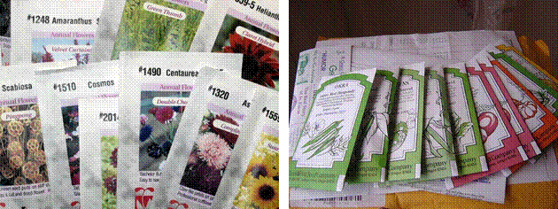

GPBR 112 :: Lecture 31 :: SEED MARKETING

A definition of seed marketing
Seed marketing should aim to satisfy the farmer's demand for reliable supply of a range of improved seed varieties of assured quality at an acceptable price.
- To the retailer in the agricultural sector, for example, it is selling seed along with other inputs to the farmer.
- To the farmer it is simply selling what he produces on his farm. However, whatever the circumstances, a well-defined sequence of events has to take place to promote the product and to put it in the right place, at the right time and at the right price for a sale to be made.
- Too many people think of marketing solely in terms of the advertising and selling of goods, whereas in reality marketing starts long before the goods exist and continues long after they are sold. Therefore, for the marketing process to be successful: the farmer consumer's needs must be satisfied; the seed company's objectives must be realized.
MARKETING STRUCTURE
Seed distribution systems
Seed distribution can be carried out by government, public sector agencies, co-operatives and the private sector or, as is often the case, by a combination of all of these. Channels for seed marketing may be described as:
Direct
The seed producing organization supplies the farmer directly. Some features of direct channel distribution are:
- the supplier has direct contact with the consumer
- a high level of service and customer support can be maintained
- direct control is maintained over the quality of the product
- the upkeep of such a system can be expensive, with high fixed costs if a
sales force is employed
- a responsive management structure and well-motivated staff are required
where there are many staff involved in a direct sales organization there can
be an inbuilt inertia to change so the system may lack flexibility.
- the revenue necessary to pay for the high fixed costs will only come from
having a wide product range and achieving good market shares or selling
high value products such as horticultural seeds.
Single level
The seed producing organization supplies the farmer through independent retail outlets. The main features of this system are that:
- the seed supplier relies on the retailer for contact with the consumer
- retail networks require strong service and support from the supplier
- good administrative control must be provided by the sales management
- the supplier's distribution system must be well organized and responsive
- product quality at the retail level must be monitored for deterioration and
adulteration and a return system should be considered - although the products may be well promoted, the supplier relies on the retailer to make the final sale.
Multilevel
The seed producing organization supplies a national distributor, wholesalers or regional distributors who, in turn, supply sub-distributors or the retail outlets.
This system is characterized by:
- the supplier having no direct contact with the consumer
- products being strongly promoted in order to create demand
- supplying seed to the distributors in sufficient time to achieve timely availability at the retail level
- management ensuring that there is a good system of monitoring sales and obtaining feedback from the consumer
- the distributor being interested only in the strongest selling lines.
If neither infrastructure nor the economy are well developed, national distributors may simply not be available and the seed producer will have to supply seed to regional wholesalers or distributors.
Sources of seed available to farmers
For farmers there are a number of sources available for the purchase of seed. These are:
Direct sales
The seed producer supplies the farmer directly from central seed stores and a network of his/her own supply points
Farmer producers
Farmers with seed production contracts are licensed to supply other farmers within their zone of influence
Cooperatives
Cooperatives act as 'farmer producers' and/or as suppliers of inputs to members
Farmer dealers
Farmers act as dealers, supplying their neighbours; this can evolve into a highly developed system
Commission agents
These work directly with the producer or his/her intermediaries, passing on orders from the farmers
Grain merchants
Traders involved in the seed and grain business who are also licensed seed producers
Crop buyers
Collectors and crop or commodity traders who provide a point of contact with farmers and can be used to market seed
Retail store dealers
Town and village dealers who retail a range of agricultural inputs, with the larger operators possibly having sub-dealers
Industrial processors
Processors interested in specific crops including oilseed crushers and vegetable canners, who may have an interest in supplying seed as part of a growing contract or integrated production system
Cold store operators
Potato cold store operators trade potato seed since they deal directly with the growers and have the appropriate storage
Consumer outlets
Garages, shops and supermarkets (are best suited to display small packets of seed)
Mail order
Suitable for low volume, high value products such as vegetables and flowers.
Although government extension outlets are not strictly retail outlets, seed is sometimes supplied to the farmer through government sponsored agencies and departments which administer crop or regional development and credit programmes.
ORGANIZATIONAL CHART
- Product management
Concentrates on developing and implementing marketing policy for a seed product or range of products
- Advertising, promotion and public relations
Aims to create product awareness, influence farmers' buying decisions, (PR) and build up a positive perception of the company
- Sales order administration and dispatch
Involves receiving and processing orders, allocating stock and dispatching orders, and maintaining stock records
- Stock control and quality assurance
Involves managing the inventory for each class of seed, crop and variety, to ensure maintenance of germination and vigour
- Distribution and transport
Entails moving the seeds from the point of production to the point of sale
- Sales and invoicing
The process of making the actual sale and receiving payment for it, i.e. the end result of the marketing activity
- Management information
Involves collating and interpreting sales information and other information as a basis for monitoring operations and planning future activities
- Customer care
Involves after-sales service, dealing with complaints and maintaining customer loyalty
THE PROMOTIONAL ACTIVITIES
Resources invested in variety development and seed production will be wasted if farmers are not persuaded to use the improved varieties. All promotional activities involve sending messages to the distributors and consumers in order to inform them about a company's products and help them to make their decision to buy a particular variety or brand of seed.
- Advertisements
Messages sent via the media to inform and influence the farmer
- Sales promotions
Specific techniques designed to increase sales of particular seeds
- Personal selling
The importance of salesmanship
- Publicity and public relations
Generalized communication which is designed to promote the company's image rather than that of specific seeds
- Extension
Farmers in developing countries have certain characteristics:
- They have low purchasing power coupled with a low rate of return from farming.
- They are generally conservative and therefore are slow to adopt new products.
- They may not be well informed.
- They often lack mobility and the means to transport goods.
It should also be recognized that educational and literacy standards will not always be high in rural communities. The use of visual material will help to overcome some communication problems. In all forms of communication, companies should always try to make the subject of seeds interesting and relevant to the consumer.
Advertising
The published print media
This includes newspapers, periodicals, magazines, trade and professional journals. There may be both advantages and disadvantages when advertising in this manner.
Some advantages of the printed media are that:
- good coverage can be obtained and, by using the local press and specialist
papers, accurate targeting can also be achieved
- it is relatively cheap and immediate
- complex messages can be given in print; these can be read again and again
- reply and cut-out coupons with an exchange value can be used to encourage
farmers to request further information and buy the product.
Some disadvantages of the printed media are:
- the text, and therefore the message, may not be well understood due to language and literacy problems
- only limited space may be available
- printed text has limited impact and colour does not always reproduce well in newspapers
- a daily paper has a limited life and the advertisements will have to compete for attention with stories and other information.
As well as placing advertisements, press releases can be given to newspapers or features written that carry the name of the company and its products.
The broadcast media: This includes television, radio and cinema.
Television
Some advantages of television are:
- the impact will be greater as both sound, colour and movement can be used
to convey the message
- massive coverage can be achieved and some local targeting may be possible.
Some disadvantages of television are:
- it can be very expensive and is only suitable for simple messages
- the exposure time is short and the advertisement may miss the target audience
- TV reception may be poor and if local targeting is not possible the message will not be relevant to many viewers
- there may not be any related interest programmes that will be viewed by the target audience
- in many countries farmers cannot afford television, although televisions are often available in clubs, bars and other public places.
Radio
Some advantages of radio are:
- good coverage is achieved; this is not confined to the home as people listen to the radio everywhere, including when they are working on the farm
- it is relatively cheap to broadcast on radio compared to television and advertisements are easier to prepare
- the incidence of local broadcasting, in local languages, is greater than with television
- related interest programmes and farming information spots are usually more frequent.
Some disadvantages of radio are:
- reception may be poor in certain areas
- people don't always listen closely and consequently may have poor recall of the message.
Language problems can be overcome through local broadcasting and there is always the possibility of involving local personalities to add interest and relevance to the area. Radio is useful for making announcements, such as the availability of seed in the area. Another form of broadcasting is the loudspeaker van which can be used to tour villages or towns to make similar announcements, particularly on a market day.
Cinema
In rural locations where cinema is the main entertainment a high proportion of the audience will be involved in farming so this medium could be considered for advertising. Advertising slides are not expensive to prepare and these can be shown during the show.
The outdoor media
Outdoor media include posters, signs and advertising on transport, bus shelters, walls and buildings. These forms of advertising can be used to increase the visibility of the company and its products. Outdoor advertising may have considerable and lasting impact at a low cost if it is well situated and if there is not too much competition for the available space. Exclusive arrangements can always be made for the use of space.
In addition to commercial advertising, retailers should be supplied with signs and crop boards. It is important that good sites are chosen which are highly visible and strategically placed to ensure maximum exposure.
Packaging design
 Packaging is a form of advertising. Clear printing, the use of colour, brand or company logo and well reproduced photographs or images are all important components of design.
| Download this lecture as PDF here |